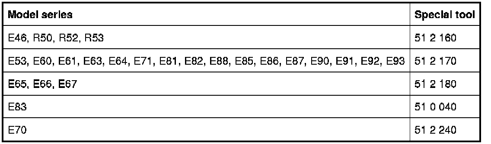
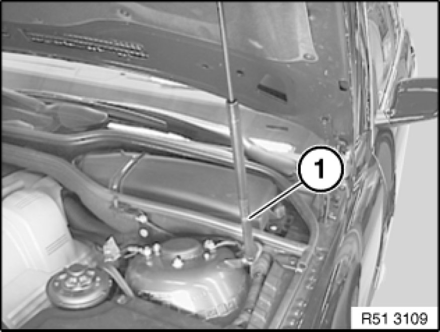
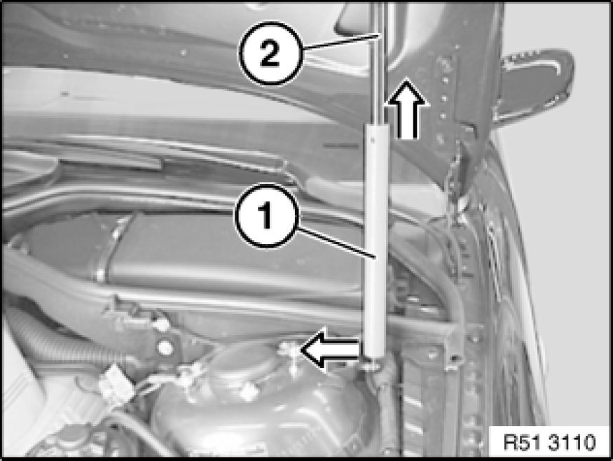

Procedures
51 00 ... - Service position of engine hood/bonnet

Special tools required:
- 51 0 040 51 0 040 Hood/Bonnet Stay (2 x)
- 51 2 160
- 51 2 170
- 51 2 180
- 51 2 240
Note:
Only the special tool pertaining to the model series can be selected.


Warning!
Risk of injury and damage!
Engine hood/bonnet must be held by a second person helping.
Note:
The illustrations below serve as examples for all corresponding vehicles.
The operation is described on the left side; proceed in the same way for the right side.

Special tool can only be used on housing (1) of gas spring strut (thick part).
Note:
Gas spring strut can also be installed the other way round (housing on hood/bonnet).
Special tool can be used in both directions.

Release gas spring strut Service and Repair on left/right housing side.
Slide special tool (1) over housing (2) of gas spring strut.
Clip ball socket of special tool on ball stud.
Proceed in same way on other side.